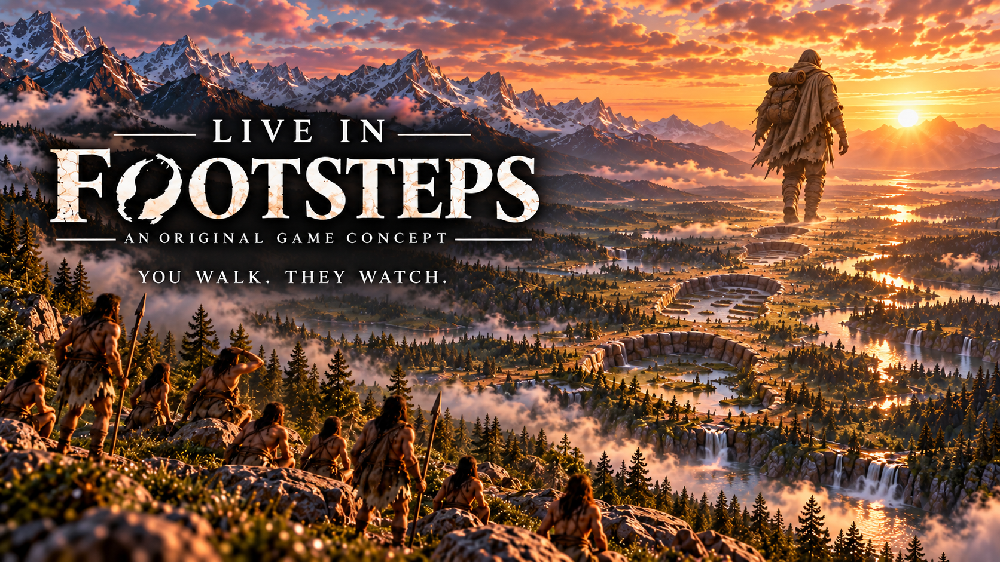
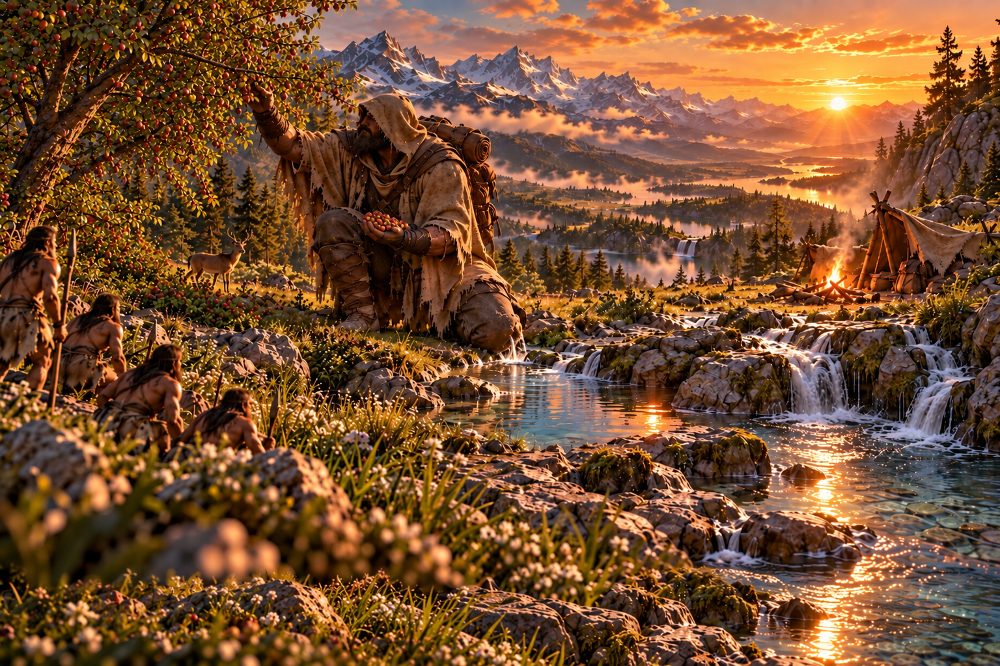
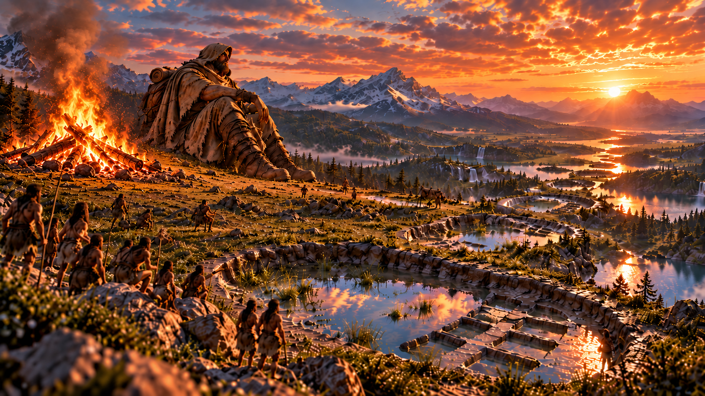
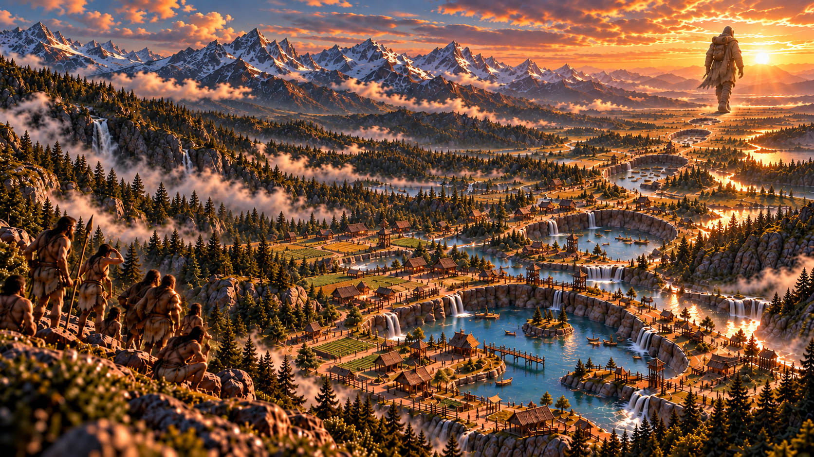
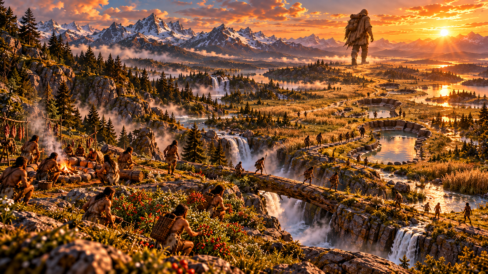
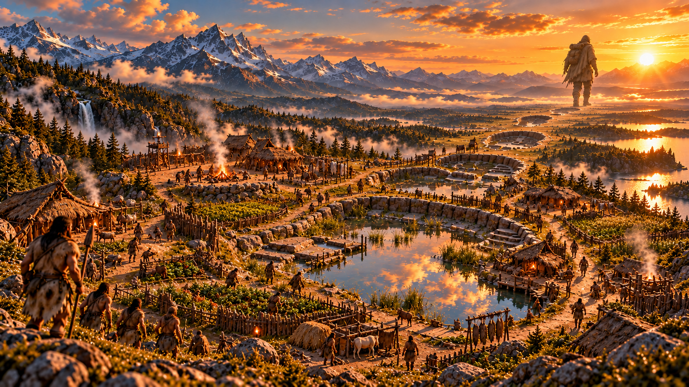
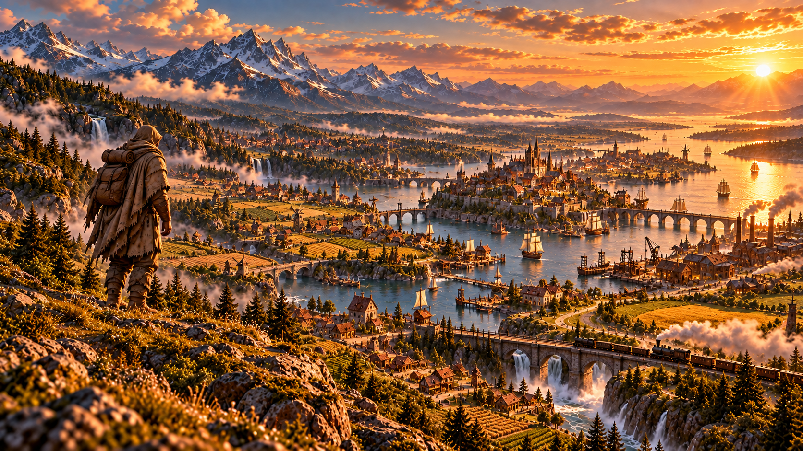

01
YOU WALK.
They watch.
Your route through the landscape becomes information. Humans discover crossings, safe ground and easier ways through the world.
AN ORIGINAL GAME CONCEPT
A survival game where your footsteps become civilization.
Not 4X. Still civilization.

THE CORE IDEA
You are a giant traveler, not a god. You walk, search for food and water, rest, and keep moving. Human societies observe the traces you leave behind and turn them into paths, gathering places, settlements, and eventually history.

01
YOU WALK.
Your route through the landscape becomes information. Humans discover crossings, safe ground and easier ways through the world.

02
YOU REST.
A campfire, a resting place or a useful clearing can become a place people return to long after you leave.

03
YOU LEAVE.
Years and centuries pass while you travel. Camps become villages, roads connect regions, and the world develops without direct commands from you.
NOT 4X. STILL CIVILIZATION.
The player never places a city, assigns citizens or chooses a technology from a menu.
The world changes because ordinary survival actions leave useful traces that autonomous people can interpret, reuse and develop.
SURVIVAL FIRST
You still need water, food, rest and a reason to keep moving. The civilization layer begins as a byproduct of those needs.

THE WORLD REMEMBERS
Footprints, compressed ground, opened crossings, moved obstacles and other physical changes can become the first layer of a human network.

AUTONOMOUS CIVILIZATION
Not every trace becomes important. Terrain, resources and connections determine whether a gathering place fades away or grows into a lasting settlement.
THE EXPERIENCE
Find water, food, shelter and places to sleep.
Follow curiosity instead of a chain of quest markers.
Your ordinary actions quietly reshape how humans move and gather.
Discover what people built from places you once passed through.

THE LONG ARC
Humanity eventually builds its own roads, bridges, ships and railways. The age of the giant ends not with destruction, but with independence.
MORE BEYOND THIS PAGE
Additional game systems, progression, world simulation and design documentation are kept private and are available for discussion on request.
CONTACT